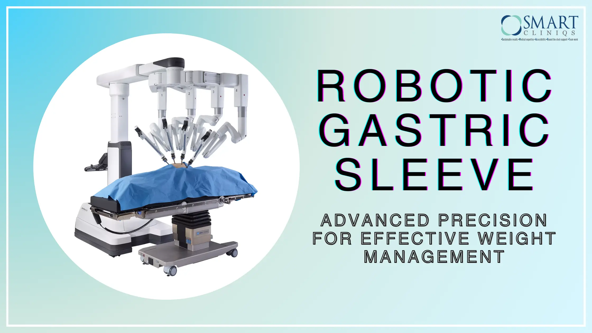

I den moderne kreative industri er effektivitet og innovation nøglefaktorer for succes. Med det stigende antal digitale værktøjer, der tilgængelige specielt til iOS-enheder, har professionelle nu endnu større muligheder for at forbedre deres arbejdsflow. En essentiel ressource i denne sammenhæng er specialiserede værktøjer, der hjælper med at generere, teste og optimere indhold direkte på iPhone og iPad. Her vil vi udforske, hvordan avancerede værktøjer til iOS kan revolutionere kreative processer og hvorfor det er essentielt at anvende dem i en konkurrencedygtig branche.
Hvorfor iOS er et centrum for kreative værktøjer
iOS-platformen har etableret sig som en af de førende operativsystemer for mobil kreativitet, med millioner af aktive brugere dagligt. Denne popularitet drives af robust hardware, intuitiv brugeroplevelse og et veludviklet app-økosystem. Kreative professionelle, fra grafiske designere til essayforfattere, drager fordel af en række specialiserede applikationer, som muliggør alt fra grafisk design til indholdsgenerering, uden at være bundet til stationære maskiner.
Innovative værktøjer til kreativ indholdsgenerering
Historisk set har kreative processer ofte været begrænset af softwarevalg, som krævede kraftige desktops. Med fremkomsten af kraftfulde iOS-applikationer kan kunstnere nu arbejde mere fleksibelt og spontant, hvilket væsentligt øger produktiviteten i felten eller på farten. Et eksempel er Featherywordscocombinator til iPhone og iPad, et værktøj designet til at styrke tekstbaseret kreativitet gennem avanceret generering og kombination af ord.
Fokus på brugervenlighed
En af nøglefordelene ved moderne iOS-værktøjer er brugervenlighed kombineret med kraftfulde funktioner. Dette muliggør, at kreative professionelle kan bruge mere tid på det kreative, og mindre på at lære komplekse software. Det er denne intuitive tilgang, der gør værktøjer som Featherywordscocombinator til iPhone og iPad til en uundværlig del af det kreative arsenale.
Data- og søgeteknologi for innovative output
Specielt i eksemplet med featurer som kombinator, der kan prikle nye ideer ud fra eksisterende data, bygger innovation på avanceret dataanalyse og sprogteknologi. Industry reports viser, at AI-drevne tekstværktøjer er steget med over 30% i adoption blandt kreative fagfolk siden 2022 1. Disse værktøjer hjælper med at automatisere rutineopgaver, generere nye koncepter og teste kreativ output i realtid, hvilket sparer værdifuld tid og frigør mere kreativ energi.
Fremtiden for iOS-baseret kreativ teknologi
Den eksplosive vækst i AI og maskinlæring integreret i mobilapplikationer peger mod en næsten uendelig udviklingskurve. For eksempel arbejder større tech-udbydere konstant på at forbedre API-integrationer og brugeroplevelsen ved at automatisere kreative processer. Det betyder, at værktøjer som Featherywordscocombinator til iPhone og iPad sandsynligvis vil blive endnu mere kraftfulde og intuitive, hvilket vil bane vejen for en helt ny æra af digital kreativitet.
Konklusion: En nødvendighed for moderne kreative
I en tid hvor digital innovation er nøgle til succes, er det afgørende for kreative professionelle at integrere de mest avancerede værktøjer direkte på deres iOS-enheder. Eksemplet med Featherywordscocombinator til iPhone og iPad illustrerer, hvorledes cutting-edge teknologi kan fremme innovation, forbedre arbejdsflowet og skabe unikke indholdsmuligheder. At mestre disse værktøjer bliver ikke blot en konkurrencefordel, men en grundlæggende nødvendighed i den moderne kreative industri.
1. Kilde: Industry Report on AI Adoption in Creative Fields, 2023
Back to Blog